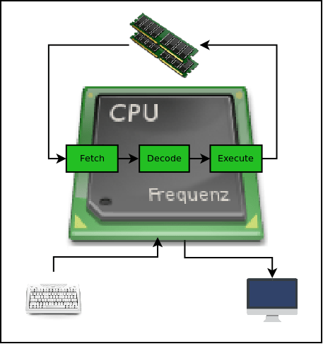
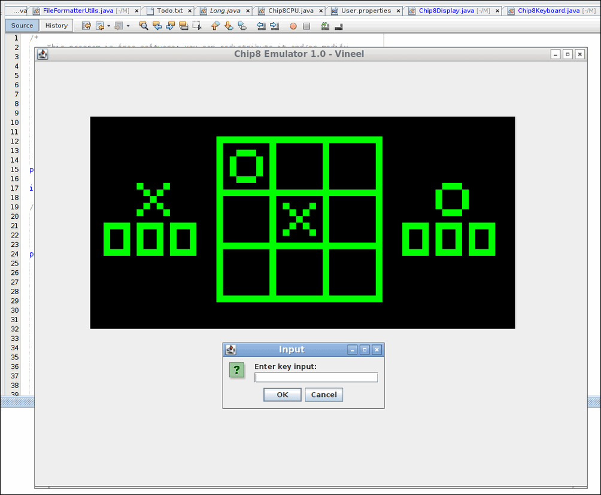
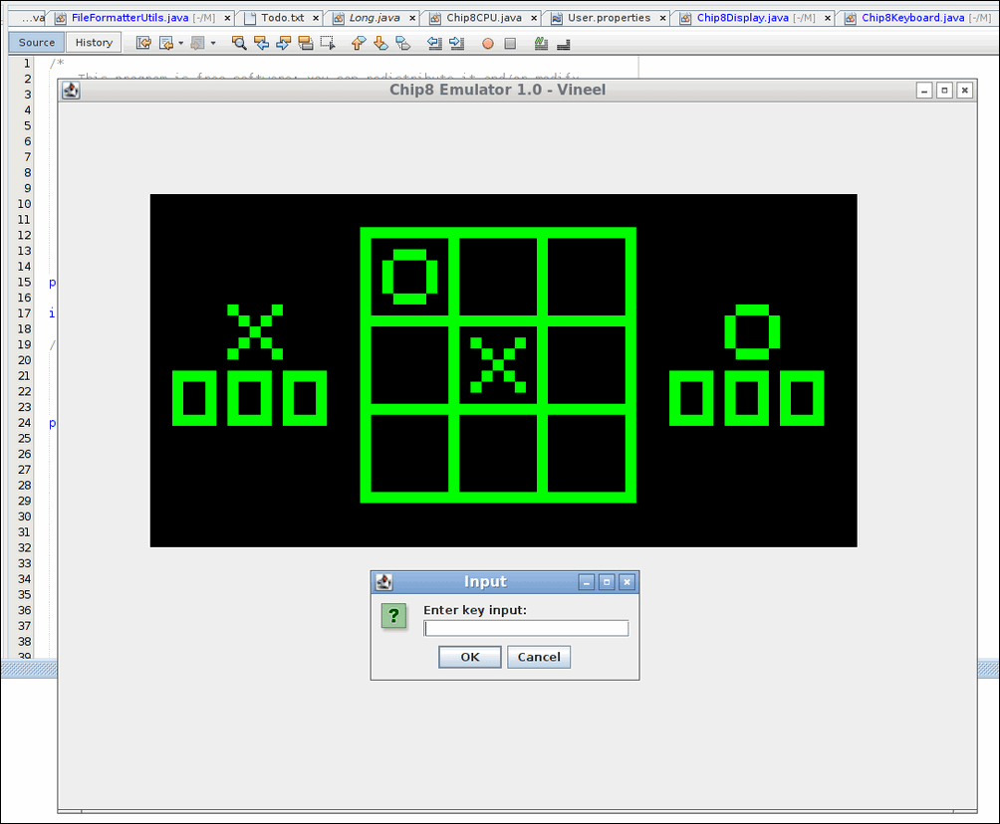

Introduction
I am proud, This weekend I did some productive work. I was able to code Chip 8 emulator in Java over a night. I have always been fascinated by them and finally I was able to get the damn thing to work! For those of you who are not familiar with software emulator, It is a software which can emulate the functionality of other hardware or software components. Notable examples are video game emulators(Dosbox ,NES Emulator), general purpose software emulators(QEmu)
What is Chip 8?
It was the software used in some of earlier 8 bit microprocessors. Which provided portability across multiple computer models. Think of it as the JVM of 1970. Similar to JVM byte codes, it has an instruction set. Any program written in this instruction set can be interpreted by the Chip 8 interpreter(which will be preloaded in to memory @ 0x0). Over the weekend, I was trying to write an emulator for this instruction set. Fortunately, I tried and succeeded in do it. In this article I would like to share my thoughts about how to write an emulator in its most basic form. More info of chip 8 can be found here.
How does a CPU work?
Lets quickly go back to computer organization 101 class. In its most basic form, Every CPU need two inputs.
- Data
- Instructions
To store and retrieve these, CPU also needs a storage location, we call this as RAM. Along with this we may also need couple more input/output devices. The simplest of these are keyboard and display.
Now lets see how all of these interact with one another. Every CPU when powered on will have to read its first instruction to execute. The location of this very first instruction in RAM is usually hard coded to a predefined location by convention. This is when CPU starts interacting with RAM for the first time. Once it fetches the instruction from RAM. It tries to decode it, meaning, it tries to understand want it should do with it. After that, it will execute the operation. As part of this execution any new results will be saved backed to RAM. This process repeats forever. This is the classic Fetch-Decode-Execute cycle. In the process CPU may also interact with keyboard and display. Below illustration explains the process.

Emulation
In general, for any processor to emulate other hardware or software components it has to essentially emulate all the above modules and any associated peripherals. First, we need to get familiar with the Chip 8 Technical Reference found here. This reference covers pretty much every thing we need. Enough theory, Now lets get to the meat of the show, THE CODE.
Technically, an emulator can be written in any language. I have chosen Java for its included batteries/libraries. I have organized the source code of my implementation into below 5 Objects.
- CPU(Chip8Cpu.java) - This is the core module which implements the instruction set of Chip 8 and its decode logic
- Memory(Chip8Memory.java) - This emulates the RAM and associated constraint to interact with Chip 8 CPU
- Display(Chip8Display.java) - This emulates the Dxyn - DRW Vx, Vy, nibble
- instruction to capture the output on to the display
- Keyboard(Chip8Keyboard.java) - This emulates the keyboard input
- Main(Main.java) - The main driver program which sets up the system
CPU
The bulk of the decode processing logic is implemented in the run() method and each instruction is first fetched using Memory object’s getWord() method(every opcode in of Chip 8 is of 2 bytes). Then decode the instruction and appropriately run the respective executable code. For the majority of time, execution mainly results in moving data around.
//Below Is The Trimmed Version Of Original Source Code Found At
//https://github.com/vineelkovvuri/Projects/tree/master/Chip8Emulator/src/main/java/com/vineelkumarreddy/chip8/Chip8CPU.java
public class Chip8CPU {
private int V[] = new int[16]; //8bit each
private int I; //16bit
private int DT; //8bit
private int ST; //8bit
private int PC; //16bit program counter
private int SP; //8bit stack pointer
private int stack[] = new int[16]; //16bit each
private final Chip8Display display;
private final Chip8Keyboard keyboard;
private final Chip8Memory ram;
private final int DT_FREQUENCY = 60; //60 hz
private final int ST_FREQUENCY = 60; //60 hz
private final int HZ = 1000; // 60hz => 60 times in 1sec or in 1000 milliseconds
public void run() {
while (true) {
//FETCH
int instruction = ram.getWord(PC);
incrementPC(); //fetched the instruction so move on
//DECODE
int opcode = (instruction >> 12) & 0xf;
switch (opcode) {
case 0:
decode0(instruction);
printInstructionDecodeCycle(0);
break;
// Trimmed for brevity
}
}
}
private void incrementPC() {...}
private void decode0(int instruction) {
int opcodeArgs = instruction & 0xfff;
switch (opcodeArgs & 0xff) {
case 0xEE: // 00EE - RET
//EXECUTE
PC = stack[--SP];
break;
}
}
}
Memory
//Below Is The Trimmed Version Of Original Source Code Found At
//https://github.com/vineelkovvuri/Projects/tree/master/Chip8Emulator/src/main/java/com/vineelkumarreddy/chip8/Chip8Memory.java
public class Chip8Memory {
// Chip 8 can address up to 4K bytes
private int ram[] = new int[0x1000];
private final int DEFAULT_LOAD_ADDRESS = 0x200;
// Read from RAM
public int getWord(int index) {...}
public int getByte(int index) {...}
// Write to RAM
public void setByte(int index, int value) {...}
// Load program
public void loadProgram(Path path) {...}
// Dump RAM for debug
public void dumpRAM() {...}
}
The primary operations done by CPU with memory is reads and writes. These are implemented as getByte() and setByte() operations inside Memory object. These reads and writes are actually backed up by 4k integer array. This is the maximum memory addressable by Chip 8 instruction set.
Display
//Below Is The Trimmed Version Of Original Source Code Found At
//https://github.com/vineelkovvuri/Projects/tree/master/Chip8Emulator/src/main/java/com/vineelkumarreddy/chip8/Chip8Display.java
public class Chip8Display extends JFrame {
//Chip8 display size
private final int displayWidth = 64, displayHeight = 32;
private JPanel display[][] = new JPanel[displayHeight][displayWidth];
public boolean setPixel(int x, int y) {...}
public void clear() {...}
}
The one and only instruction in the Chip 8 instruction set that interact with display is Dxyn - DRW Vx, Vy, nibble. When CPU has decoded this instruction, it interface with the Display object and calls setPixel() method to turn on/off a pixel. Display is interesting and it deserves some explanation. The way the instruction works is, given a starting pixel (Vx, Vy). CPU first reads nibble number of bytes from the memory location pointer by I register. Now each bit in each byte corresponds to one pixel starting from (Vx, Vy). For example if jth bit of ith byte is 1 then the pixel at display[Vx + j][Vy + i] XOR with its previous value. This mechanism is also called Stripping in the reference. The Display object simulates each pixel as a 12×12 size JPanel. The entire display contains 64×32 such pixels or JPanels. These JPanels are initially added to JFrame window and these will be set to black for ‘off’ state and green for ‘on’ state by setPixel() method.
Keyboard
//Below Is The Trimmed Version Of Original Source Code Found At
//https://github.com/vineelkovvuri/Projects/tree/master/Chip8Emulator/src/main/java/com/vineelkumarreddy/chip8/Chip8Keyboard.java
//This listener is added to Chip8Display module to capture the events
public class Chip8Keyboard implements KeyListener {
// This keeps the state of the chip 8 keyboard's 15 keys
private boolean keysPressed[] = new boolean[0x10];
public boolean isChip8keyPressed(int key) {...}
public void keyPressed(KeyEvent e) {...}
public void keyReleased(KeyEvent e) {...}
}
There are few instructions which interfaces with keyboard. This object is hooked as the keyboard listener on to the JFrame of Display. This is the only way that I know in Java to capture the keyboard events. Chip 8 has 15 keys starting with 0-9 and A-F. We maintain the state of these keys using an array of 16 integers and convert the A-F key events to their corresponding 10-15 indexes in to the above array.
Main
public class Main {
public static void main(String... args) {
// Init peripherals
Chip8Keyboard keyboard = new Chip8Keyboard();
Chip8Display display = new Chip8Display(keyboard);
Chip8Memory ram = new Chip8Memory();
// Init CPU
Chip8CPU cpu = new Chip8CPU(ram, display, keyboard);
// Load program to RAM
ram.loadProgram(Paths.get("/home/vineel/Downloads/chip8/CHIP8/GAMES/INVADERS"));
// Run CPU
cpu.run();
}
}
Finally, this object is responsible for setting up all the modules and invoking the CPU run() method. Purposefully I kept this object very simple, especially by hard coding the file path to load.
Output
Now in order to test this, we need some chip 8 programs/games, also called as ROM files. A simple google search will return good number of ROM files. Let’s see the output of loading few of them.
Invaders
 TicTac

Tetris
TicTac

Tetris
 PingPong
PingPong
 This one is for my wife, It is really not a game, but this ROM file exist
beside other game files. I know we cannot play with them. IBM ROM for my
wife ;)
This one is for my wife, It is really not a game, but this ROM file exist
beside other game files. I know we cannot play with them. IBM ROM for my
wife ;)
 I recommened you to read the source code https://github.com/vineelkovvuri/Projects/tree/master/Chip8Emulator.
I recommened you to read the source code https://github.com/vineelkovvuri/Projects/tree/master/Chip8Emulator.